See What Forester Owners Are Saying
Genuine feedback from Forester owners using SMITHtRONiC kits. If you've installed yours, share your experience below!
Pre-Assembled Light Kit
I love these fog lights! Installation was very easy, and SMITHtRONiC was incredibly helpful with troubleshooting... turns out it was just user error (I hadn't fully clicked in the connectors).
The lights are pretty bright, well-built, and make a huge difference in low-visibility conditions. They’re exactly what I have always wanted. Highly recommend!
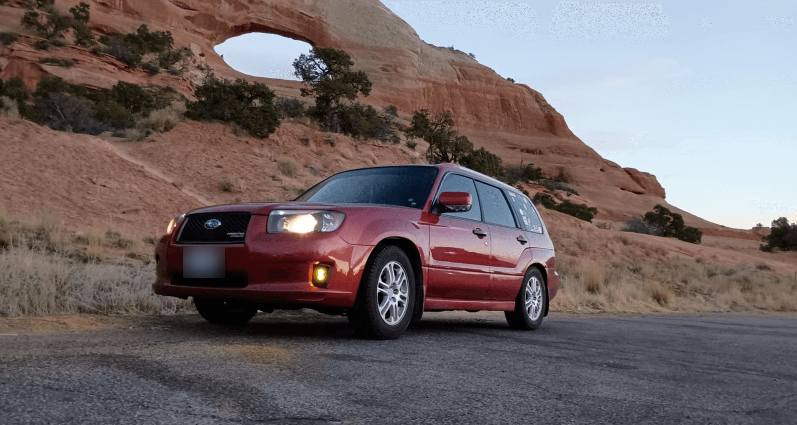
Pre-Assembled Light Kit
Fog light kit looks great. Used to run a 18” light bar in the lower grill area but this kit made it look more like a factory option. Which it probably should have been for the “sports” model since it’s pre-wired. Install was super easy with included instructions. I did have to modify a tab on my washer reservoir a bit but told Ron about it and should be coming out with a fix (possibly isolated case). Overall great product and excellent customer service every step of the way.
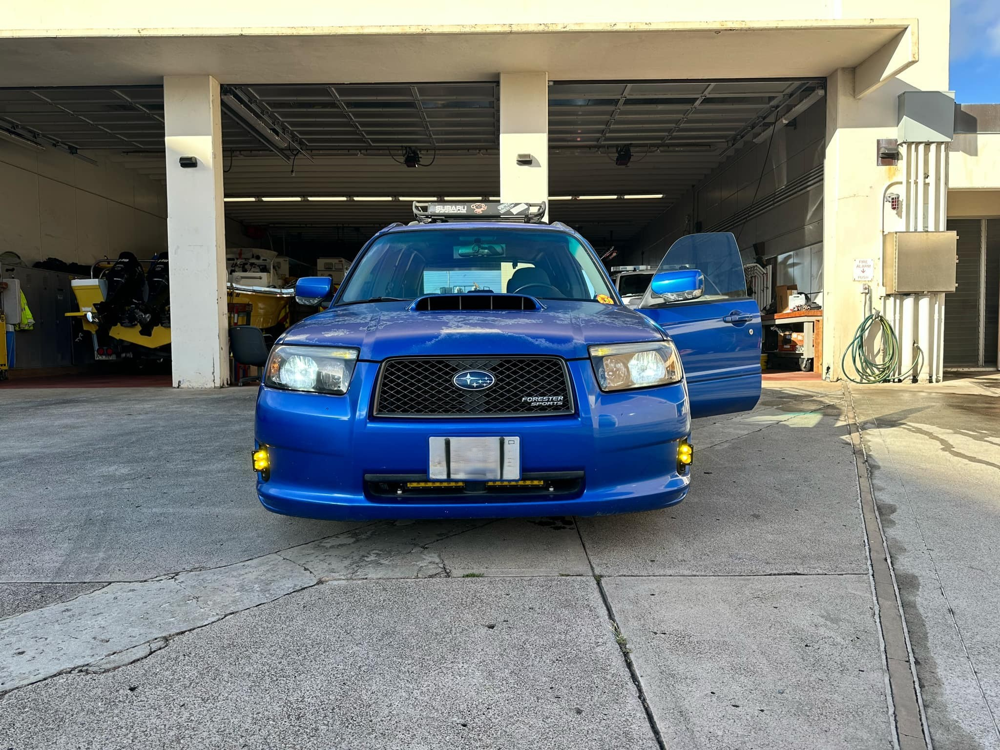
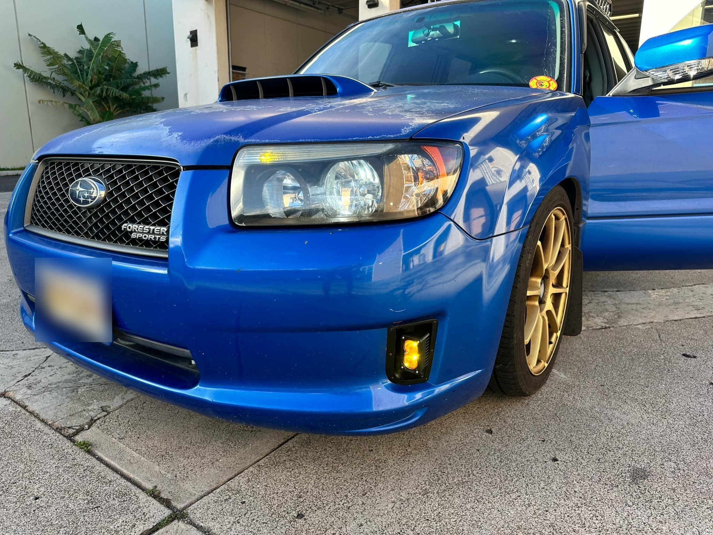
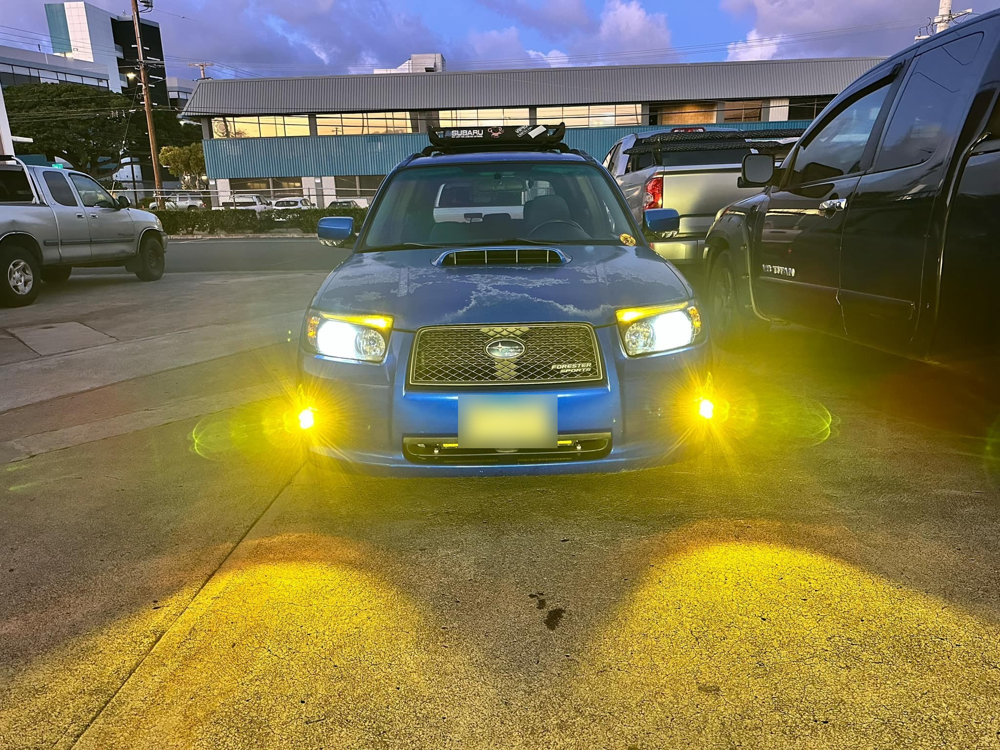
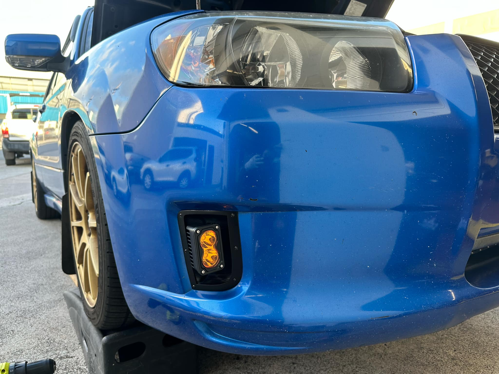
Pre-Assembled Light Kit
This is the best fog light design for the SG9 sports bumper. The instruction was very straight forward and the retaining ring design makes this install solid. I had to order another set for my automatic 07 FXT.
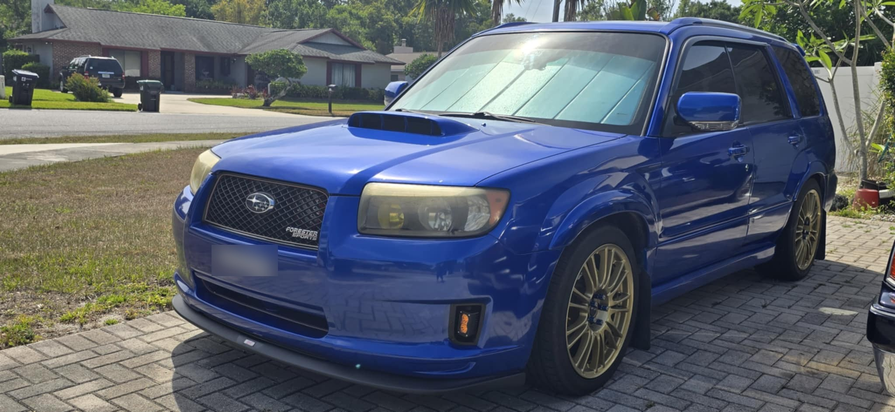
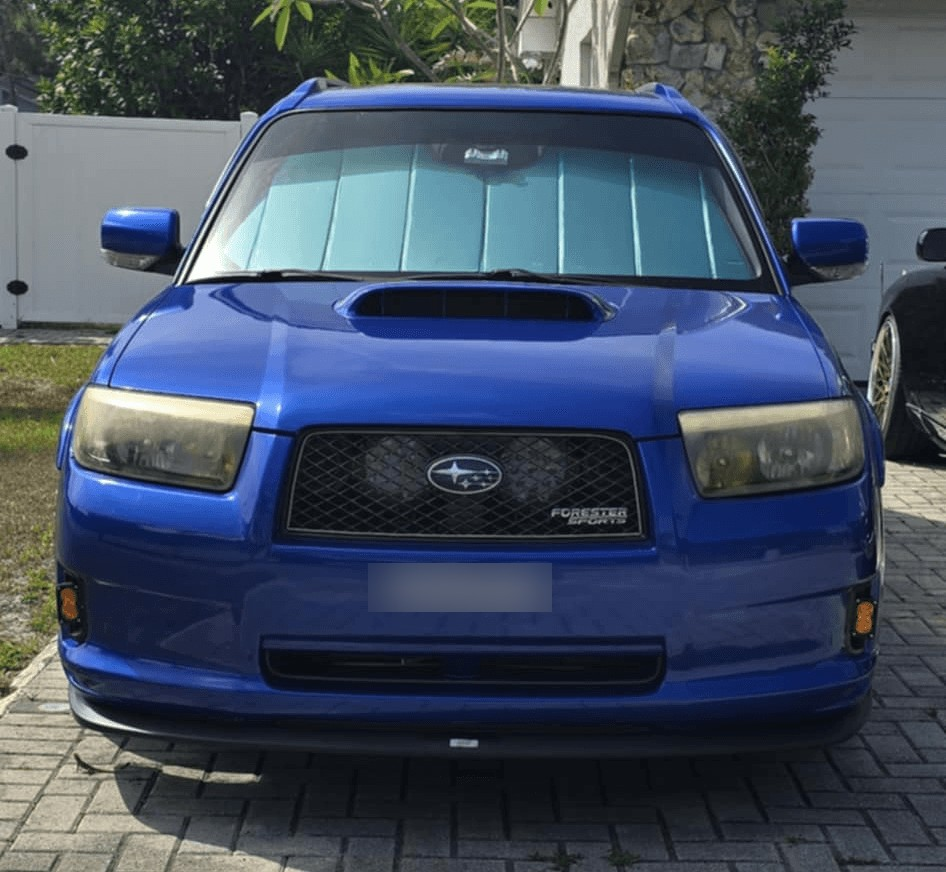
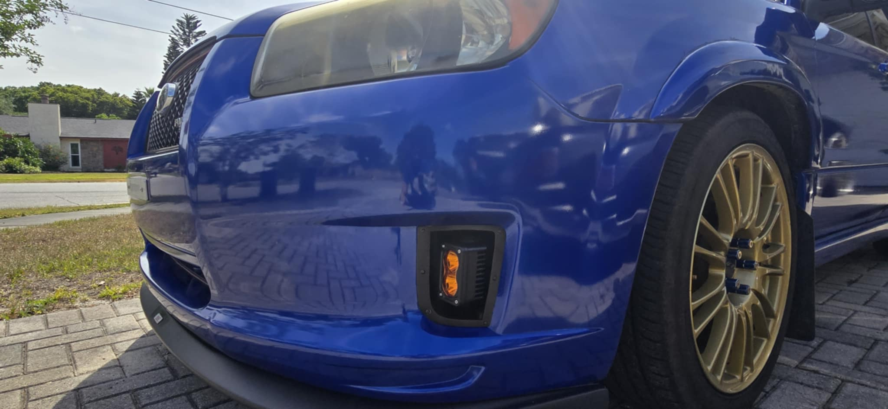
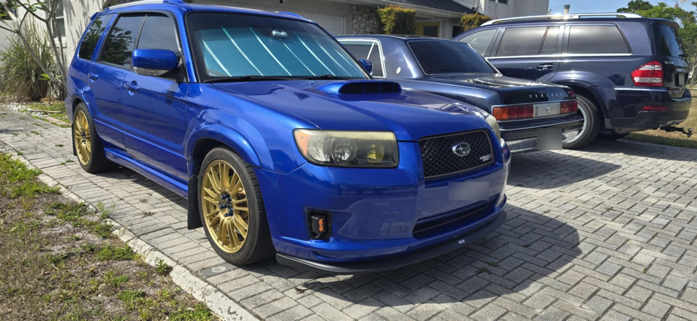
Pre-Assembled Light Kit
These lights are f*cking awesome. I love how they look on my car - without them the front would be boring. These lights give the car a new character, sharper and more futuristic. They shine beautifully too. And Ron was very helpful, communicative, working with him was great collaboration. Highly recommend.
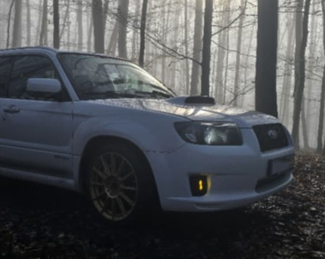
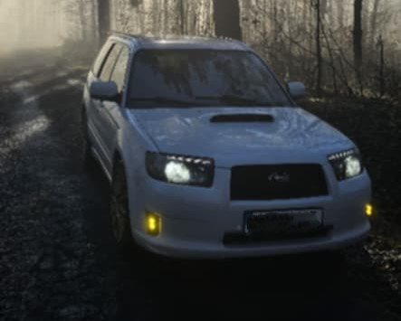
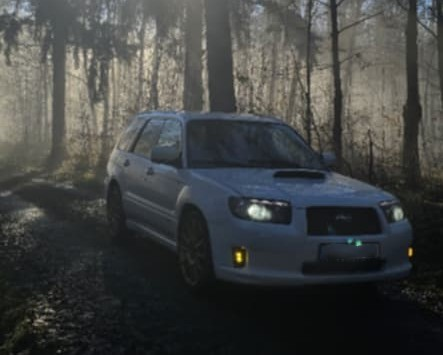
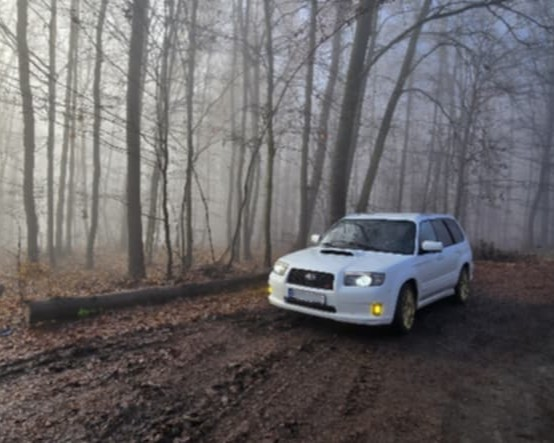
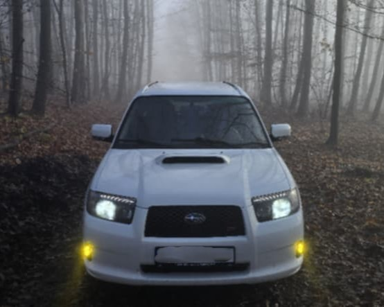
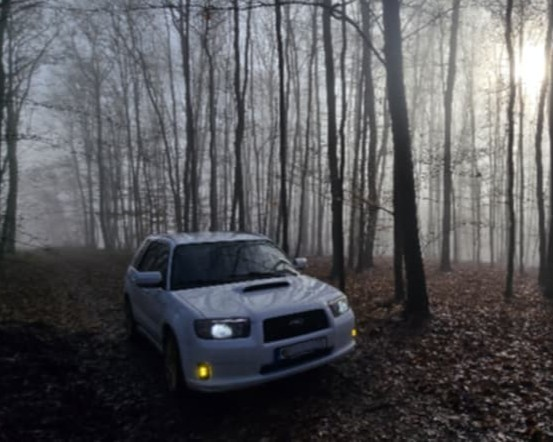
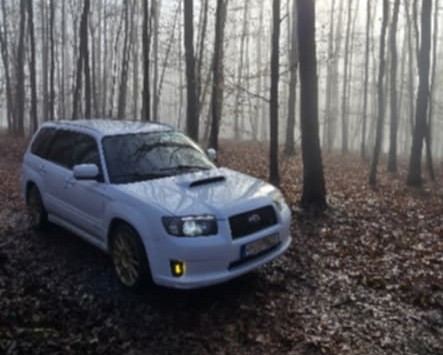
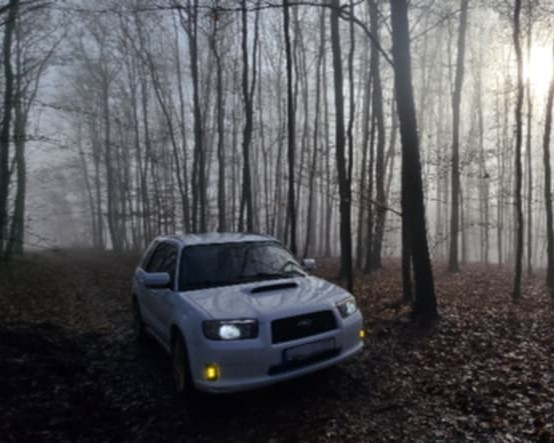
Share Your Experience
Built one? I'd like to hear how it went — especially the parts where the documentation was wrong.